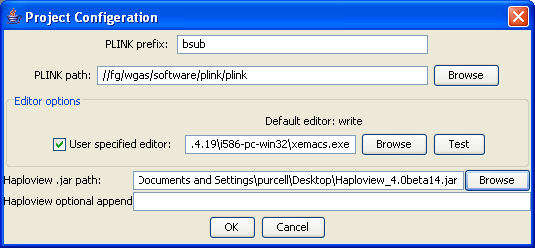

|  |
Configuring gPLINKThis shows the completed configuration form. The most important two things are that gPLINK knows where PLINK (either remotely or locally) and Haploview (always locally) live. Next time you open this project, this step will be skipped and gPLINK will remember the settings.Previous | Next |